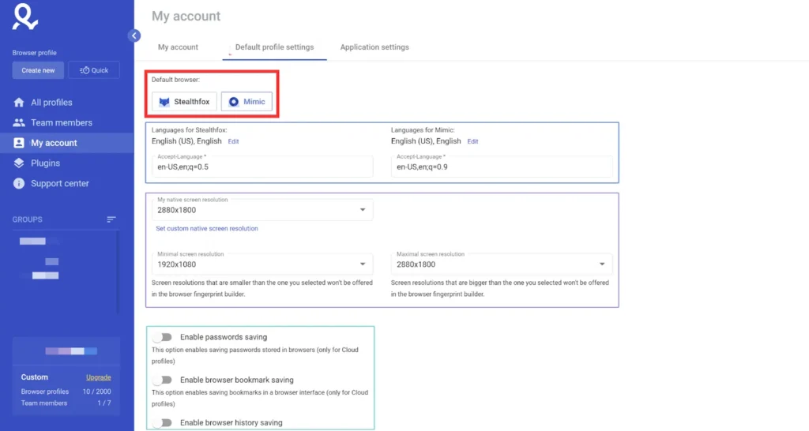

Who benefits most from Multilogin?
Agencies, affiliate teams, e-commerce operators, and automation-heavy workflows tend to benefit most because account separation and operational structure matter more for them.
This guide helps you decide whether Multilogin fits your workflow by looking at the real use cases where its premium pricing and broader feature set make practical sense.

Multilogin is one of those tools that can look expensive until you compare the price to the cost of workflow problems. If your work depends on stable multi-account browser operations, a good antidetect browser can be much cheaper than repeated bans, broken sessions, lost team time, or messy account overlap. But that does not mean Multilogin is the right choice for every buyer. The key is to understand where the platform creates enough value to justify its premium feel.
The latest public messaging around Multilogin shows a broader platform than many older articles describe. It is no longer useful to think about it only as a browser profile tool. Current positioning emphasizes cloud mobile and browser profiles together, AI quick actions, API access, quick cloning, bulk operations, premium proxy bonuses, and business-level team management. Those features point clearly toward certain types of workflows.
Affiliate marketers are one of the most natural fits for Multilogin because campaign workflows often require multiple identities, isolated sessions, proxy discipline, and repeatable testing. When you are managing multiple offers, traffic sources, or account environments, accidental overlap creates real risk. Multilogin helps separate these environments more cleanly than a standard browser stack.
This use case becomes even stronger if you work in a team or manage many campaign variations. Templates, bulk operations, and reusable profile logic start to matter quickly. In that context, Multilogin's premium orientation makes sense because workflow stability is directly connected to revenue.
Agencies need separation, but they also need structure. Client A and Client B should never feel like they are living in the same loose browser environment. A platform like Multilogin becomes valuable because it gives teams a way to isolate browser profiles, assign proxies intentionally, manage role-based access patterns, and create repeatable profile systems. If an agency is juggling social media management, ad accounts, e-commerce assets, and local market tests, the need for order grows fast.
That is where Business plan features make the most sense. Advanced team management, unlimited seats, and profile or proxy templates are not just "nice to have" extras for agencies. They solve the operational problem of making many people work in a predictable system.
Multilogin can also make sense for e-commerce businesses and marketplace teams managing multiple regional assets, storefronts, or account environments. The point is not to create unnecessary complexity. It is to maintain separation, reduce cross-account contamination, and keep workflows stable when multiple identities or access contexts are required.
Businesses in this space often care less about whether a tool is "cool" in affiliate circles and more about whether it helps teams operate cleanly. That is one reason Multilogin's broader platform positioning is useful. It feels less niche when viewed through the lens of operational control.
The public pricing page and documentation references make it clear that Multilogin wants to be part of automation-heavy environments. API access is visible even before the highest plans, and Business plans mention custom API rate limits. For operators building repeatable account checks, launch flows, regression tests, or browser-based tasks, this matters. A tool that works only as a manual dashboard may not be enough. A tool that can connect more naturally with automation pipelines has a stronger long-term case.
If your team writes scripts or coordinates browser actions programmatically, Multilogin deserves serious evaluation. Not every buyer needs this, but for those who do, it becomes one of the clearest reasons to pay more.
Reputation managers, listing managers, and local operations teams may also find value in Multilogin. These workflows often require controlled separation across regions, clients, or account contexts. Proxy logic matters, session stability matters, and repeatable access matters. A well-organized browser profile system can reduce friction and make daily tasks more predictable.
This is another category where the combination of browser fingerprinting management, profile isolation, and team organization is more important than the cheapest monthly price.
There are also cases where Multilogin may be more than you need. If you are a casual beginner testing one or two side accounts and your workflow is simple, a lower-cost alternative may be enough. The same is true if you do not need collaboration, templates, automation access, or large profile counts. Buying a premium system only makes sense if you will actually use the premium value.
This does not mean cheaper tools are always better for small users. It simply means the decision should be grounded in workflow reality. If you do not have much operational complexity, the premium may be harder to justify.
Ask yourself five questions. First, do I manage enough profiles or accounts that organization matters? Second, do I need stable isolation between workflows? Third, do multiple people need access? Fourth, do I expect to automate or template part of this process? Fifth, is account friction expensive for my business? If the answer is yes to several of those questions, Multilogin becomes easier to justify.
If most of your answers are no, the best next step is to compare pricing and alternatives carefully. That is why this site links the pricing page, review page, and alternatives page together. Buyers need the full picture, not just a coupon box.
Multilogin is worth it when your workflow is serious enough that structure, stability, team operations, and automation potential matter more than getting the cheapest monthly tool. It is less compelling when your needs are tiny and budget is the main filter. If you already know your use case is strong, the next step is simple: review the plan options and use coupon AFF5025.

Agencies, affiliate teams, e-commerce operators, and automation-heavy workflows tend to benefit most because account separation and operational structure matter more for them.
It is harder to justify when your workflow is small, your account volume is low, and your main goal is simply finding the cheapest way to separate a few sessions.
Read the review page if you want a full verdict or the alternatives page if you want to compare other tools directly.